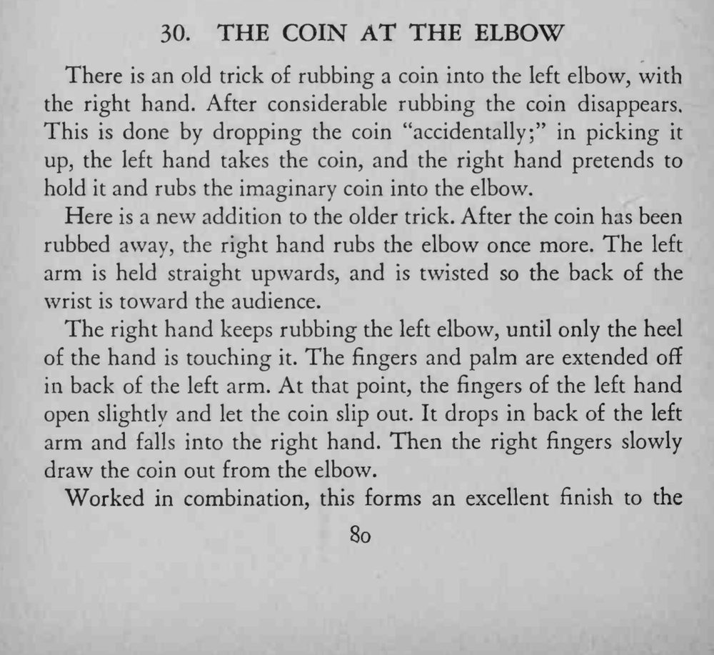
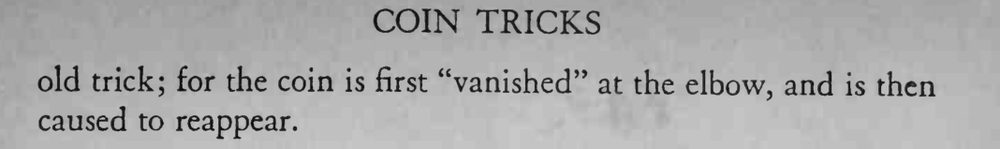

右手把硬币在左肘上反复揉搓，硬币渐渐消失；再揉几下，硬币竟又从肘部被拉了出来。
硬币落进右手时右手不要有接的动作，仍要保持揉肘的姿态。


There is an old trick of rubbing a coin into the left elbow, with the right hand. After considerable rubbing the coin disappears, This is done by dropping the coin "accidentally;" in picking it up, the left hand takes the coin, and the right hand pretends to hold it and rubs the imaginary coin into the elbow. Here is a new addition to the older trick. After the coin has been rubbed away, the right hand rubs the elbow once more. The left arm is held straight upwards, and is twisted so the back of the wrist is toward the audience. The right hand keeps rubbing the left elbow, until only the heel of the hand is touching it. The fingers and palm are extended off in back of the left arm. At that point, the fingers of the left hand open slightly and let the coin slip out. It drops in back of the left arm and falls into the right hand. Then the right fingers slowly draw the coin out from the elbow. Worked in combination, this forms an excellent finish to the old trick; for the coin is first "vanished" at the elbow, and is then caused to reappear.